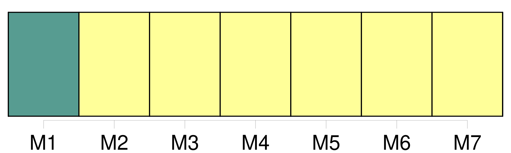
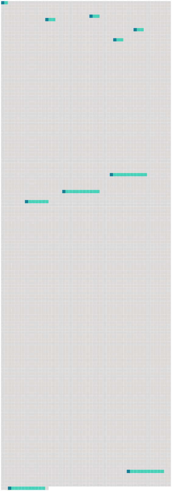

Longueur nb maillons : 10 mentions |
  |
[Article IX] : Prise de décisions [7 phrases] S'agissant des décisions mentionnées aux points 2 et 3 [du présent article] , si une partie ou un membre de la Commission, le cas échéant, est absent lors de la réunion en question et n'a pas envoyé une notification conformément au point 6 [du présent article] , le directeur notifie à cette partie ou à ce membre la décision prise lors de ladite réunion. [3 phrases]
Lorsqu'une partie ou un membre de la Commission qui était absent lors d'une réunion notifie au directeur qu'il ne peut s'associer au consensus sur une décision prise lors de cette réunion, conformément au paragraphe 4 [du présent article] , ce membre ne peut s'opposer au consensus sur la même question s'il est absent lors de la réunion suivante de la Commission à l'ordre du jour de laquelle figure cette question. [2 phrases]
Cette notification est effective dès que le directeur en accuse réception au membre concerné, et [48 phrases] La Commission adopte tous les ans son budget pour l'année suivante, conformément à [l'article IX, paragraphe 3, de la présente convention] [10 phrases] Le montant de la contribution de chaque membre de la Commission au budget est défini conformément au schéma adopté et, selon les circonstances, amendé par la Commission, conformément à [l'article IX, paragraphe 3, de la présente convention] [6 phrases]
Sans préjudice des dispositions de [l'article IX de la présente convention] , et à moins que la Commission n'en décide autrement, si un membre de la Commission accumule des arriérés de contributions d'un montant égal ou supérieur à la somme des contributions qu'il doit au titre des vingt-quatre mois précédents, ce membre n'a pas le droit de participer à la prise de décisions au sein de la Commission avant d'avoir satisfait à ses obligations en vertu du présent article. [108 phrases]
Les amendements à la présente convention sont adoptés conformément à [l'article IX, paragraphe 2, de la présente convention] [10 phrases]
Les amendements aux annexes sont adoptés conformément à [l'article IX, paragraphe 2, de la présente convention] |
 |
La ressource peut être téléchargée sur la page Ortolang
Si vous avez des questions ou vous voyez des erreurs, merci d'envoyer un mail à silvia.federzoni89@gmail.com
Site développé par S. Federzoni (contact)